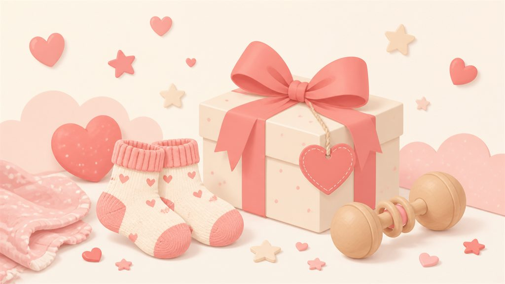

出産内祝いの選び方。
相場・時期と、外さない定番ギフト8選

出産祝いをいただいたら、お返しにあたるのが出産内祝い。赤ちゃんのお世話で慌ただしい時期に、相場の計算と品物選びが一度にやってくるのが大変なところです。この記事では、基本のマナーを先に短く押さえてから、実際に選ばれている定番ギフトを紹介します。
まず押さえる基本マナー
| 金額 | いただいた額の半分〜1/3。高額をいただいた親族には1/3で十分 |
|---|---|
| 時期 | お宮参り（生後1ヶ月）ごろまで。遅れても2ヶ月以内を目安に |
| のし | 紅白蝶結び・表書きは「内祝」。下段は赤ちゃんの名前（ふりがな付き） |
| 添えもの | お礼状か命名カード。写真付きは近い親族向けに |
選び方の3つのコツ
- 相手が選べるもの・消費できるものにする。好みが分からない相手には食べもの・飲みもの・洗剤などの「消えもの」か、カタログギフトが安全です。
- 名入れは「食べたら消えるもの」だけにする。赤ちゃんの名前が入った食器や置物は、相手が処分に困ることがあります。名入れするならお菓子やお米など消えものに。
- 相手別に金額を変えて2〜3種類用意する。全員に同じものではなく、「親族向け」「職場向け」「友人向け」で価格帯を分けると選びやすくなります。
外さない定番ギフト8選
1. 今治タオルのギフトセット
2,000〜5,000円品質の分かりやすさで内祝いの大定番。何枚あっても困らず、目上の方にも失礼がありません。白やベージュの上品な色味を選ぶと世代を問わず喜ばれます。
楽天で今治タオルの内祝いを見る2. 焼き菓子の詰め合わせ
1,500〜3,000円個包装で日持ちするフィナンシェやクッキーは、職場への内祝いに最適。連名でいただいたお祝いのお返しにも、みんなで分けられて便利です。
楽天で焼き菓子の詰め合わせを見る3. 名入れバウムクーヘン・お米
1,500〜3,500円赤ちゃんの名前と生年月日を入れられる「消えもの」。お披露目を兼ねられるので、親族への内祝いの定番になっています。出生体重と同じ重さのお米も人気。
楽天で名入れ内祝いギフトを見る4. カタログギフト
3,000〜11,000円好みが分からない方、高額をいただいた方へのお返しの決定版。相手が自分で選べるので失敗がありません。価格帯が細かく分かれているので半返しの調整もしやすい。
楽天でカタログギフトを見る選び方の詳細はカタログギフトの選び方で解説しています。
5. コーヒー・紅茶のギフト
2,000〜4,000円ドリップバッグやティーバッグの詰め合わせは、在宅の多い方やオフィスへの贈り物にちょうどいい軽さ。ノンカフェインを選べば産後のママ友への内祝いにも。
楽天でコーヒー・紅茶ギフトを見る6. 洗剤・ハンドソープのセット
1,500〜3,000円実用性で選ぶならこれ。デザイン性の高いブランドを選べば「消えもの」でも安っぽくなりません。家族の多いお宅へのお返しに特に喜ばれます。
楽天で洗剤ギフトセットを見る7. ジュース・スープの詰め合わせ
2,000〜4,000円果汁100%ジュースや無添加スープは、子どものいる家庭・健康志向の方に。重いので直送できる点も、まとめて贈る内祝いに向いています。
楽天でジュースギフトを見る8. 高級ふりかけ・お茶漬けの素
1,500〜3,000円「ちょっと良い日常品」は少額のお祝いへのお返しにぴったり。かさばらず日持ちして、好き嫌いも分かれにくい隠れた定番です。
楽天で高級ふりかけギフトを見る「誰にいくら返すか」の管理が一番大変
出産内祝いで実際に大変なのは、品物選びよりも「誰から・いくらいただいて・誰に返し終えたか」の管理です。アプリ「おくるね」なら、いただいた記録を付けるだけで半返し・1/3返しの目安額と期限を自動計算。お返し済みかどうかも一覧でチェックできます。